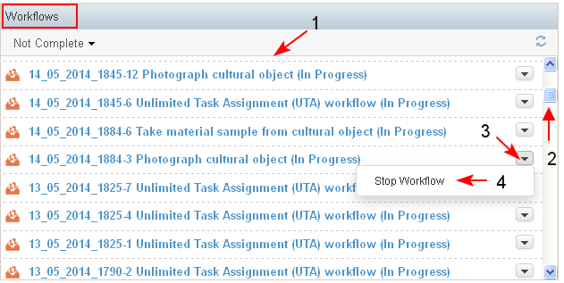
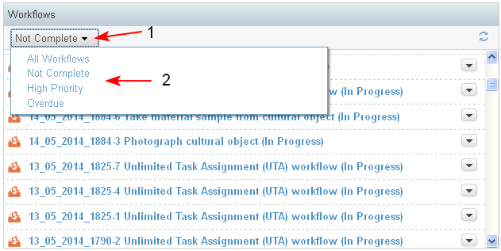
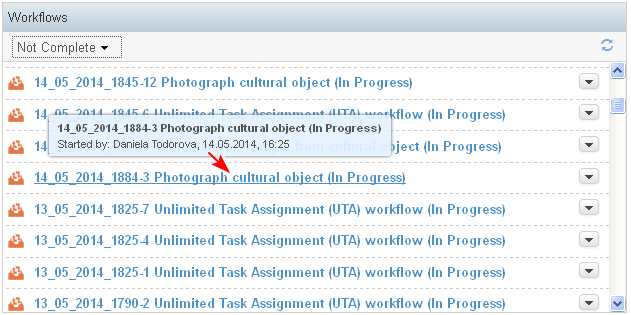

The Workflows dashlet is context dependent:
- In Personal dashboard the dashlet displays workflows started by the logged user, or workflows in which at least one task is assigned to him/her.
- In the Project Dashboard the dashlet displays information for workflows (running and completed) on project level. (All workflows that run directly on the project, or in cases in the project.)
- In the Case dashboard the dashlet displays information for all workflows (running or completed) in the case.
- The workflows are sorted by default by date of creation/ update and the latest ones are on the top (1-2).
- Next to each workflow in the dashlet there is a list with actions that could be performed on the workflow (3-4). The actions depends on the user permissions.

- There is a filter in the dashlet which displays:
- All Workflows (for the user, project or case)
- Not Completed workflows - all workflows which are not in end state (Completed or Cancelled)
- High Priority workflows - Not Completed workflows, which are only with High Priority
- Overdue workflows - workflows which end date is before today and the workflows are still not completed.

- For each workflow in the dashlet there is information about: Workflow ID, Workflow Type, Workflow Status, Created by, Created on
